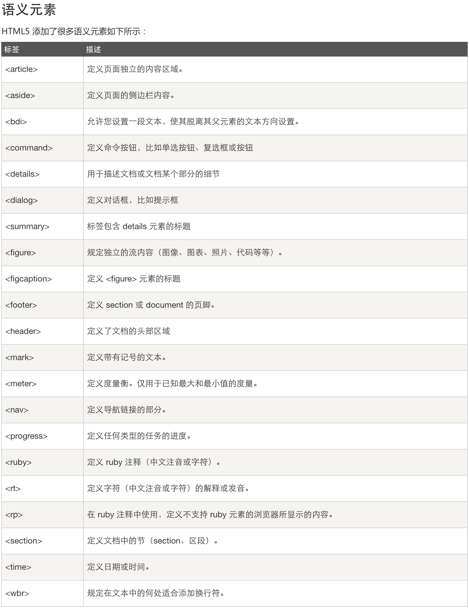

HTML5是HTML最新的修订版本，2014年10月由万维网联盟（W3C）完成标准制定。
HTML5的设计目的是为了在移动设备上支持多媒体
HTML5 中的一些有趣的新特性：
用于绘画的 canvas 元素
用于媒介回放的 video 和 audio 元素
对本地离线存储的更好的支持
新的特殊内容元素，比如 article、footer、header、nav、section
新的表单控件，比如 calendar、date、time、email、url、search
<!doctype> 声明必须位于 HTML5 文档中的第一行,使用非常简单:
<!DOCTYPE html>
HTML5 的改进
新元素
新属性
完全支持 CSS3
Video 和 Audio
2D/3D 制图
本地存储
本地 SQL 数据
Web 应用
HTML5 多媒体
HTML5 <video>>
HTML5 <audio>
HTML5 应用
使用 HTML5 你可以简单地开发应用
本地数据存储
访问本地文件
本地 SQL 数据
缓存引用
Javascript 工作者
XHTMLHttpRequest 2
HTML5 图形
使用 HTML5 你可以简单的绘制图形:
使用 <canvas>> 元素。
使用内联 SVG。
使用 CSS3 2D 转换、CSS3 3D 转换。
HTML5 使用 CSS3
新选择器
新属性
动画
2D/3D 转换
圆角
阴影效果
可下载的字体
/*html5*/
article,aside,dialog,footer,header,section,footer,nav,figure,menu{display:block}